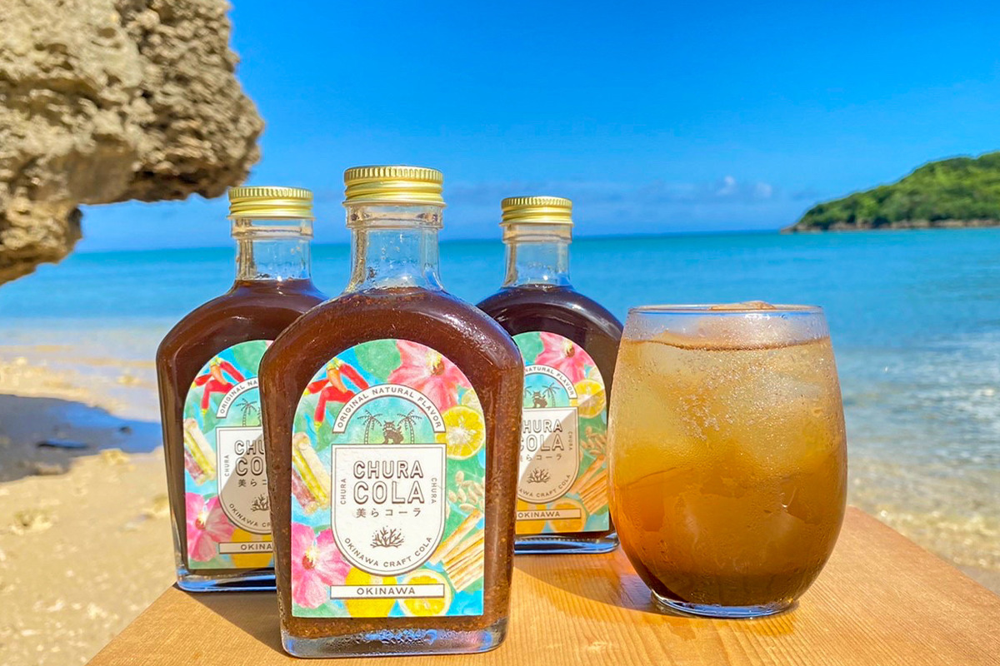
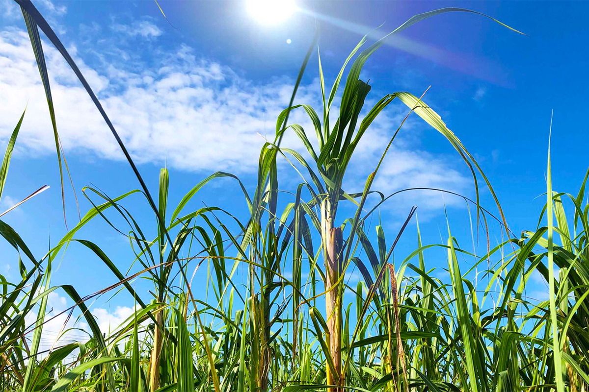
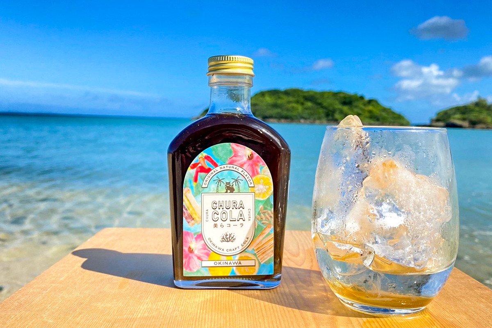
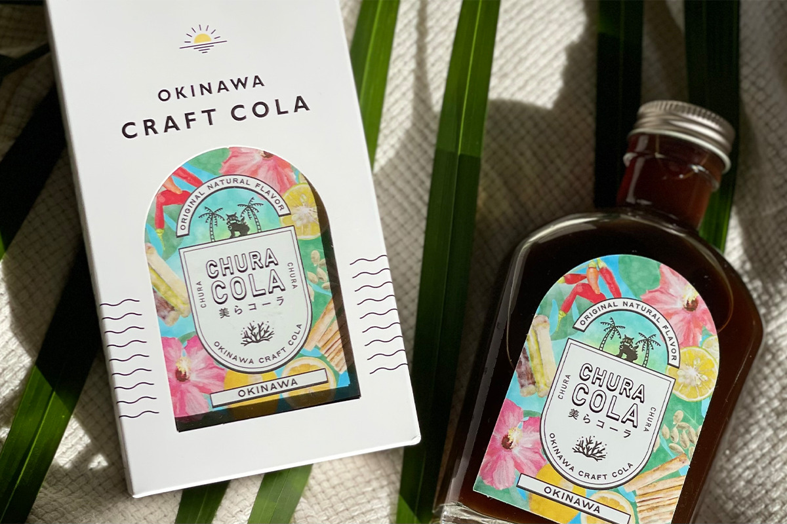
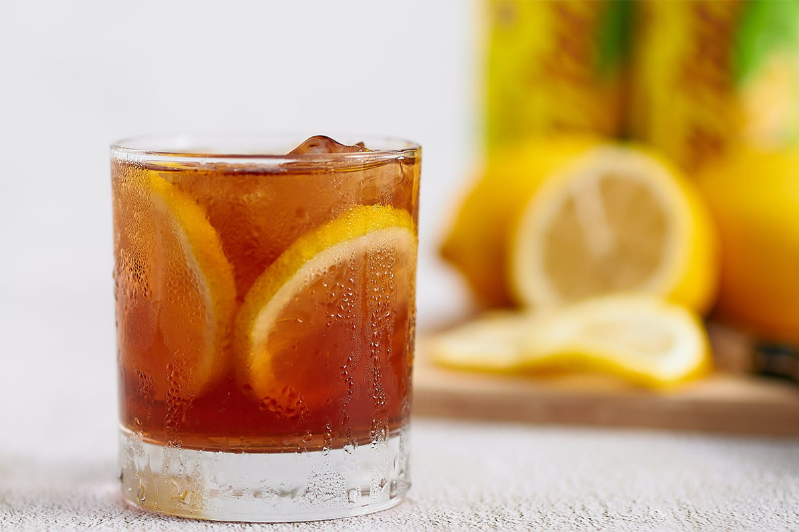
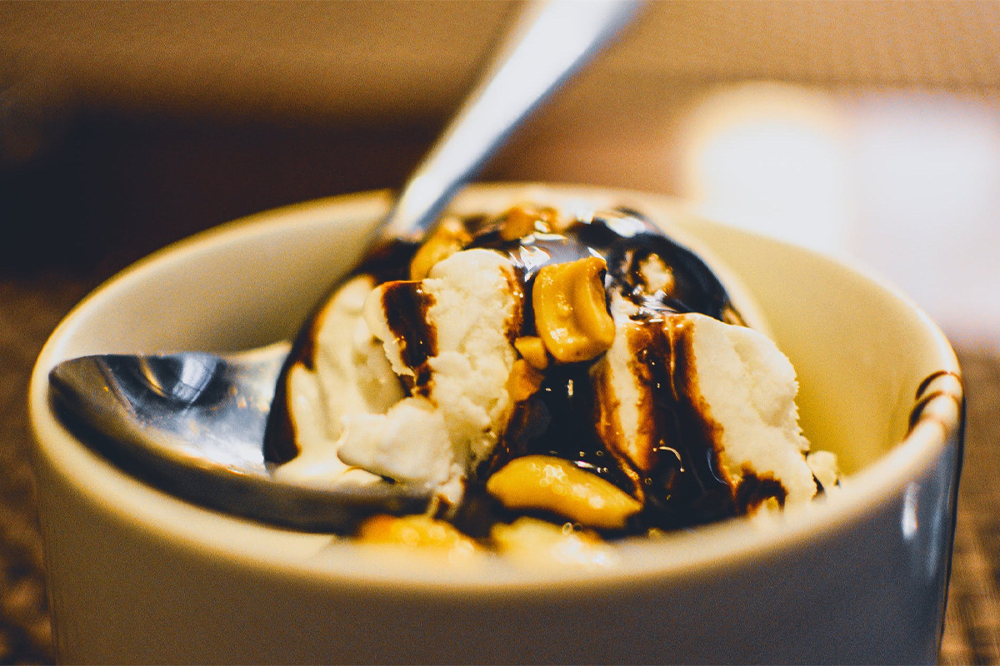

Префектура Окинава · остров Тарама · напитки
CHURA COLA: окинавская крафтовая кола на чёрном сахаре с острова Тарама

CHURA COLA это крафтовая кола из префектуры Окинава, концентрат на чёрном сахаре, соке сикуваса и островном перце, без каких-либо добавок. Её придумал молодой окинавец, который однажды попробовал крафтовую колу и решил сделать свою.
Создатель
Кола, которая поднимает настроение
Тацуки Киндзё родился в 1991 году на Окинаве и, по его словам, больше всего любит здешнее море и природу. В 2021 году он впервые попробовал крафтовую колу, и это знакомство его поразило: напиток, который так меняет настроение, бодрит, полезен и при этом вкусный. Увлечение случилось мгновенно, и вскоре Тацуки Киндзё начал работать как создатель колы, первым в Японии назвав так своё занятие.
Свою колу он назвал CHURA COLA: «тюра» на окинавском диалекте значит «красивый». В ней почти всё местное: чёрный сахар, сок цитруса сикуваса, островной острый перец. Закупая продукты у окинавских фермеров, марка поддерживает земледелие на островах, а часть выручки отдаёт на охрану кораллов.
Тарама
Сахар с острова, где треть земли под тростником

Остров Тарама лежит между Мияко и Исигаки, и живёт на нём чуть больше тысячи человек. Его включили в число «самых красивых деревень Японии». Остров необычен тем, что больше 30% его площади занимают поля сахарного тростника и другие пашни.
Из здешнего тростника старым способом варят чёрный сахар, кокуто. В нём много витаминов и минералов, которых часто не хватает современному человеку, поэтому к нему присматриваются те, кто следит за здоровьем. На Окинаве чёрный сахар любят все, и создатель CHURA COLA хочет, чтобы о нём узнали не только в Японии, но и за её пределами.
Состав
Без добавок, но с Окинавой

Чёрным сахаром дело не ограничивается. В оригинальном вкусе к нему добавляют сок сикуваса, гибискус, островной перец и морскую соль с Окинавы, а также лимон, лайм, гвоздику, кардамон, ваниль и другие пряности. Во вкусе «хабу» есть порошок из змеи хабу, ананасовый сок и мёд. Для каждого вкуса подбирают свои окинавские продукты.
Ни в одном из них нет искусственных подсластителей, синтетических красителей и консервантов. Кофеина тоже нет, так что пить колу можно в любое время дня. Во всех вкусах мягкая сладость чёрного сахара сочетается с ароматом пряностей.
Этикетка
Что нарисовано на бутылке

Этикетка выглядит по-южному яркой, но рисунки на ней не просто украшение. На ней изображено то, что идёт в колу: лимон, лайм, гибискус, кардамон, сахарный тростник, корица.
Идея пришла из собственного опыта. Когда друг впервые произнёс при Тацуки Киндзё слова «крафтовая кола», тот только переспросил: «Это ещё что такое?» Слово тогда мало кто знал, и рисунок состава на этикетке показался ему лучшим способом объяснить, что внутри.
Как пить
Со льдом, с авамори или горячей
Неразбавленный концентрат мягко сладкий, со вкусом чёрного сахара. Летом его смешивают с ледяной газированной водой или с алкоголем: джином, водкой, авамори.


Колу можно лить на колотый лёд какигори или на мороженое. В холодное время года её разводят горячей водой, и такая горячая кола, пожалуй, удаётся CHURA COLA лучше, чем любой другой японской крафтовой коле.
Бутылка концентрата на 200 мл в 2022 году стоила 1820 иен с налогом. Купить её можно на острове Окинава и на сайте марки.
CHURA COLA
- Цены / Вход
- 1820 иен с налогом, 200 мл
- Как добраться
- продаётся на острове Окинава и на сайте марки